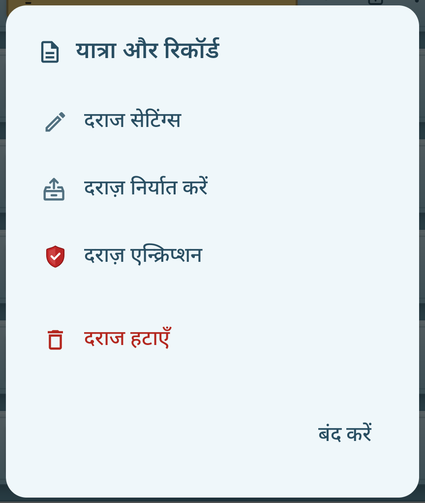

अभी लिखो उपयोगकर्ता मार्गदर्शिका
संस्करण 0.9.34
अपने विचारों को नोट्स के रूप में, दिन के लिए अपनी योजनाओं को कार्य के रूप में और अपनी किराने की खरीदारी को एक सूची के रूप में लिखें। आप किसी भी समय दराज के सीने के तीन-पंक्ति मेनू (☰) में "उपयोगकर्ता मैनुअल" पर जाकर इस मैनुअल की समीक्षा कर सकते हैं।
1. पहला उपयोग और स्क्रीन कॉन्फ़िगरेशन
अभी लिखो एक ऐप है जो विषय के अनुसार ड्रॉअर में नोट्स एकत्र करता है। जब आप ड्रॉअर पर टैप करते हैं, तो नोट्स की एक सूची खुल जाती है, और जब आप किसी मेमो पर टैप करते हैं, तो सामग्री लिखने के लिए एक स्क्रीन खुल जाती है।


लॉक दराज की लॉक स्थिति को इंगित करता है, और लाल शील्ड इंगित करती है कि एन्क्रिप्शन प्रभावी है या नहीं। बंद दराजों को थीम रंग से भरे पैडलॉक द्वारा दर्शाया जाता है, और खुले दराजों को केवल एक रूपरेखा के साथ एक खुले ताले द्वारा दर्शाया जाता है।
कैबिनेट के टूल देखें
ड्रेसर नाम के दाईं ओर, सभी ढूंढें और ड्रेसर तीन-पंक्ति मेनू (☰) प्रदर्शित होते हैं। मेनू के शीर्ष पर, आप थीम-रंगीन ऐप का नाम देख सकते हैं, और इसके नीचे, आप उस क्रम में ड्रॉअर नाम संपादित करें, ड्रॉअर जोड़ें, ड्रॉअर आयात करें, उपयोगकर्ता मैनुअल, सेटिंग्स और रीसायकल बिन देख सकते हैं। उपयोगकर्ता मैनुअल सेटिंग्स के ठीक ऊपर स्थित है, जो एक हेक्स नट आइकन द्वारा दर्शाया गया है।
फ़ोन की क्षैतिज स्क्रीन और लगभग चौकोर मुड़ी हुई स्क्रीन 45:55 में बाईं ओर दराज और दाईं ओर सामग्री प्रदर्शित करती है। वाइड फोल्ड वाइड/टैबलेट-प्रकार की स्क्रीन मौजूदा 38:62 पहलू अनुपात को बनाए रखती है। विज्ञापन दाएँ सामग्री क्षेत्र के नीचे संलग्न होते हैं और संपादन के दौरान प्रदर्शित नहीं होते हैं।
सामान्य और विशेष दराज़
विचार, बिना श्रेणी के नोट्स और नई दराज़ टूल से जोड़ी गई दराज़ों में सामान्य नोट रखे जाते हैं। डायरी, आज के काम और खरीदारी सूची अपनी-अपनी ज़रूरतों के लिए बनाई गई विशेष दराज़ हैं।
सामान्य नोट दूसरी सामान्य दराज़ में ले जाए जा सकते हैं। विशेष दराज़ के नोट दूसरी दराज़ में नहीं ले जाए जा सकते।
अपना पहला नोट बनाएं
कैबिनेट स्क्रीन से सीधे नोट लिखने के लिए कैबिनेट के नीचे ＋ झटपट नोट पर टैप करें। नोट अवर्गीकृत नोटों में शुरू होता है। नोट के हेडर में दराज़ के नाम पर टैप करके सहेजने के लिए दराज़ चुन सकते हैं।
किसी खास दराज़ में नोट बनाने के लिए मौजूदा दराज़ खोलें और ＋ नया नोट पर टैप करें। नई दराज़ चाहिए तो नीचे दिए गए चरणों का पालन करें।
- दराज के बाईं ओर तीर (‹) के साथ टूल का विस्तार करें और
 नई दराज़ दबाएं।
नई दराज़ दबाएं। - दराज का नाम दर्ज करें और बनाएँ दबाएँ।
- आपके द्वारा बनाई गई दराज खोलें और ＋ नया नोट दबाएँ।
- शीर्षक और मुख्य भाग लिखें. आपका इनपुट स्वचालित रूप से सहेजा जाएगा. आप सूची पर वापस जाने और अपने नोट्स को फिर से खोलने के लिए बैक का उपयोग कर सकते हैं।

मुझे किस दराज का उपयोग करना चाहिए?
| दराज | उपयोग |
|---|---|
| नियमित दराज | हम विचार, यात्रा और कार्य जैसे विषय के आधार पर लेख, फ़ोटो, चित्र और फ़ाइलें एकत्र करते हैं। |
| डायरी | दिनांक के अनुसार नोट्स रखें और उन्हें कैलेंडर या लॉग सूची पर वापस पढ़ें। |
| आज के काम | दिनांक, समय, सूचनाओं, दोहराव कार्यक्रम और पूर्णता की स्थिति के अनुसार कार्यों को प्रबंधित करें। |
| खरीदारी सूची | प्रत्येक किराने की वस्तु के लिए आइटम, मात्रा और खरीद की स्थिति प्रबंधित करें। |
| बिना श्रेणी के नोट्स | कोई भी नोट इकट्ठा करें जिसके लिए आपने अभी तक दराज का चयन नहीं किया है। |
दराजों के संदूक का नाम बदलें
दराज के चेस्ट मेनू पर टैप करें (☰) → दराज के चेस्ट का नाम संपादित करें। नाम बदलें और सहेजें.

चौड़ी स्क्रीन और पूर्ण स्क्रीन
टैबलेट या अनफोल्डेड फोल्डेबल पर, जब आप बाईं दराज से एक दराज का चयन करते हैं, तो नोटों की एक सूची दाईं ओर दिखाई देगी। जब आप कोई नोट खोलते हैं, तो आप सूची और संपादन स्क्रीन को एक साथ देख सकते हैं। संपादन क्षेत्र का विस्तार करने के लिए हेडर में पूर्ण स्क्रीन बटन का उपयोग करें, और दो-स्पेस स्क्रीन पर लौटने के लिए ज़ूम आउट बटन का उपयोग करें।

2. दराज़ों का प्रबंधन
नई दराज़ बनाते समय उसका नाम, लेबल का रंग और आइकन अपनी पसंद से चुन सकते हैं। पहले से बनी दराज़ को भी उसकी सेटिंग में जाकर बदल सकते हैं।
दराज़ की सेटिंग बदलना
- कैबिनेट स्क्रीन पर जिस दराज़ को बदलना है, उसके दाईं ओर अधिक (…) पर टैप करें।
- दराज सेटिंग्स चुनें।
- दराज़ का नाम बदलें। लेबल का रंग टैब में रंग का गोला और दराज का आइकन टैब में आइकन चुनें।
- ऊपर का पूर्वावलोकन देखें, फिर सहेजें पर टैप करें।
लेबल पर चुना गया आइकन और दराज़ का नाम साथ दिखते हैं। लंबे नाम अपने प्रदर्शन क्षेत्र में स्क्रॉल होते हैं।


बिना श्रेणी के नोट्स का अधिक (…) मेन्यू सीधे दराज़ की सेटिंग खोलता है। दराज़ को एन्क्रिप्ट करने का तरीका जानने के लिए दराज़ एन्क्रिप्शन की जानकारी देखें।
दराज का क्रम बदलें
दराज को दबाकर रखें और इसे वांछित स्थान पर ऊपर या नीचे खींचें। अवर्गीकृत नोटों का स्थान निश्चित है.
एक दराज हटाएँ
अधिक → दराज हटाएँ चुनें और निर्देश जांचें। उस दराज से नोट्स और अटैचमेंट को रीसायकल बिन में ले जाया जाता है। प्रमाणीकरण के बाद एन्क्रिप्टेड ड्रॉअर हटा दिए जाते हैं और रीसायकल बिन में भी एन्क्रिप्शन सुरक्षा बनाए रखते हैं।
एक समर्पित दराज पुनः बनाएँ
डायरी, टू डू टुडे और शॉपिंग लिस्ट अपने विशिष्ट कार्य बनाए रखते हैं, भले ही आप नाम या आइकन बदल दें। हटाए गए समर्पित ड्रॉअर सेटिंग्स → समर्पित दराज में बनाए जा सकते हैं। पुराने नोट स्वचालित रूप से नव निर्मित समर्पित दराज में वापस नहीं आएंगे।
↑ सामग्री की तालिका के लिए3. नोट्स लिखें और संपादित करें
नए नोट और ऑटो-सेव
＋ दराज में नया नोट वर्तमान दराज में एक नोट बनाता है। ＋ त्वरित मेमो एक अवर्गीकृत मेमो से शुरू होता है, और पहली बार सहेजने से पहले, आप हेडर में ड्रॉअर नाम दबाकर सहेजने के लिए ड्रॉअर का चयन कर सकते हैं और चयन बटन से पुष्टि कर सकते हैं। जब आप आज की टू-डू या खरीदारी सूची का चयन करते हैं, तो यह उस ड्रॉअर से मेल खाने वाले सूची प्रारूप में बदल जाती है।
आपके द्वारा दर्ज किया गया कोई भी परिवर्तन बिना सेव बटन के स्वचालित रूप से सहेजा जाएगा। आप सूची पर वापस जाकर आपने जो लिखा है उसे दोबारा खोल सकते हैं। जब आप कोई नया या मौजूदा मेमो बंद करते हैं, तो यह सहेजने और सॉर्ट करने की प्रतीक्षा करता है और फिर एक दृश्य स्थान पर चला जाता है। यदि आप संपादन क्रम के अनुसार क्रमबद्ध करते हैं, तो आपके द्वारा अभी-अभी संपादित किया गया नोट सूची के शीर्ष पर दिखाई देगा। बस कुछ भी दर्ज किए बिना नया मेमो बंद करें। पहले से सहेजे गए मेमो का शीर्षक या मुख्य भाग हटाना सामग्री को संपादित करना है। नोट से छुटकारा पाने के लिए इसे कूड़ेदान में ले जाएं। यदि कोई सेव विफलता संदेश दिखाई देता है, तो जानकारी जांचें और पुनः प्रयास करें।
दराज के अनुसार देखें और क्रमबद्ध करें
दराज के नोट सूची हेडर में और देखें (⋮) → दराज दृश्य चुनें। मोर में, ड्रॉअर सेटिंग्स और ड्रॉअर एक्सपोर्ट भी हैं, और तिथि के अनुसार खोज को डायरी में जोड़ा जाता है। किसी ड्रॉअर को निर्यात करना खोज परिणामों या चयन स्थिति की परवाह किए बिना, उस ड्रॉअर के सभी नोट्स और अनुलग्नकों को लक्षित करता है। ड्रेसर में प्रत्येक दराज के लिए मौजूदा प्रबंधन मेनू अभी भी उपलब्ध हैं। नोट सॉर्टिंग मानदंड का चयन करें, हमेशा महत्वपूर्ण नोट्स पहले दिखाएं, और केवल इस दराज के लिए उपयुक्त शीर्षक दिखाएं। यहां किए गए परिवर्तन अन्य दराजों या समग्र सेटिंग्स को प्रभावित नहीं करेंगे।
अलग से निर्दिष्ट नहीं किए गए आइटम सेटिंग के डिफ़ॉल्ट का उपयोग करें के रूप में कार्य करते हैं। भले ही आपने स्वयं आइटम बदल दिए हों, आप उसी टेक्स्ट पर क्लिक करके संपूर्ण सेटिंग्स को फिर से फ़ॉलो कर सकते हैं। डिफ़ॉल्ट मान सेटिंग्स → दराज़ दृश्य में सेट किया गया है। यदि आप केवल शीर्षक दिखाएँ को बंद कर देते हैं, तो यह पाठ, संलग्न पूर्वावलोकन और तारीख के साथ एक पारंपरिक कार्ड के रूप में दिखाई देगा। केवल प्रदर्शन विधि बदलती है; नोट की सामग्री वही रहती है.
महत्वपूर्ण नोट्स चिह्नित करें
यदि आप नोट पर स्टार (☆) दबाते हैं, तो यह एक भरे हुए स्टार (★) में बदल जाएगा। इसे बंद करने के लिए फिर से दबाएँ। आप महत्वपूर्ण नोट्स को पहले सेटिंग्स → दराज़ दृश्य में प्रदर्शित करने के लिए सेट कर सकते हैं, या प्रत्येक ड्रॉअर के लिए दराज़ दृश्य में उन्हें अलग से चुन सकते हैं। आज के कार्य नोट्स का दिनांक शीर्षक नोट स्टार प्रदर्शित नहीं करता है। किसी सूची आइटम के बाद एक सितारा उस कार्य या आइटम के महत्व को दर्शाता है।
दूसरे दराज में ले जाएँ
- एक नियमित नोट खोलें और हेडर में ड्रॉअर नाम के आगे मूव आइकन दबाएं।
- उस नियमित दराज का चयन करें जिसे आप स्थानांतरित करना चाहते हैं और मूव बटन दबाएँ। अकेले चयन करें नहीं चलता है, और रद्द करने से वर्तमान ड्रॉअर बना रहता है। सुरक्षा को लॉक करने या हटाने के लिए कहे जाने पर पुष्टि करें।
आज के कार्य, खरीदारी सूची और डायरी में नोट्स को सीधे किसी अन्य दराज में नहीं ले जाया जा सकता है, और स्थानांतरण आइकन प्रदर्शित नहीं होता है। एक साथ कई नोट कैसे स्थानांतरित करें, इसकी जानकारी के लिए एकाधिक नोट चुनें देखें।
नोट संपादन टूलबार आइकन गाइड
सामान्य नोट्स के लिए टूलबार नीचे दिया गया है। प्रकाश चिह्न वर्तमान में अनुपलब्ध हैं. फ़ॉन्ट फ़ॉर्मेटिंग के लिए सबसे पहले उस टेक्स्ट का चयन करें जिसे बदलना है और फिर उसे लागू करें। आज की टू-डू/शॉपिंग सूची के लिए समर्पित टूल अध्याय 6 और अध्याय 8 में बताए गए हैं।
शीर्ष टूलबार: पूर्ववत करें, संलग्न करें, ध्वनि
| आइकन | नाम | आप क्या करते हैं |
|---|---|---|
 | पहले जैसा करें | वर्तमान संपादन के दौरान बदले गए अन्य नोट्स के टेक्स्ट, अनुलग्नक स्थान और अनुलग्नकों की गति को उनकी पिछली स्थिति में पुनर्स्थापित करता है। यदि वापस करने के लिए कुछ नहीं है, तो इसे हल्के रंग में प्रदर्शित किया जाएगा। |
| फिर से करें | उल्टे शरीर परिवर्तन को पुनः लागू करता है। यदि दोबारा लगाने के लिए कुछ नहीं है, तो इसे हल्के रंग में प्रदर्शित किया जाएगा। | |
 | कैमरा | एक नई फ़ोटो लें और उसे मेमो के साथ संलग्न करें. |
 | फ़ोटो | अपने फोन से एक फोटो चुनें और संलग्न करें। |
 | चित्रकारी | एक सफेद कैनवास पर एक चित्र बनाएं और उसे एक नोट में लिखें। |
 | चिपकाएँ | वर्तमान कर्सर स्थिति में एक ही मेमो से काटे गए फ़ोटो, चित्र, रिकॉर्डिंग और सामान्य फ़ाइलें सम्मिलित करें। यह केवल तभी सक्षम होता है जब कोई कट अटैचमेंट होता है, और चिपकाए जाने पर फिर से अक्षम हो जाएगा। |
 | फ़ाइल जोड़ें | एक फ़ाइल चुनें और उसे नोट के साथ संलग्न करें. यदि आप संलग्न फ़ाइल को टैप करते हैं, तो आप इसे किसी समर्थित ऐप से खोल सकते हैं। |
 | ध्वनि इनपुट | आपने जो कहा उसे अक्षरों में दर्ज करें। इसे शीर्षक या पाठ में उस स्थान पर रखा जाता है जहां ध्वनि इनपुट शुरू हुआ था, और यदि कोई चयनित वर्ण है तो उसे प्रतिस्थापित कर देता है। |
| रिकार्ड संलग्न है | अपनी आवाज या ध्वनि रिकॉर्ड करें और इसे एक ऑडियो फ़ाइल के रूप में संलग्न करें। STT के विपरीत, इसे अक्षरों में परिवर्तित नहीं किया जाता है। |
निचला टूलबार: फ़ॉन्ट प्रारूप, सूची, दिनांक
| आइकन | नाम | आप क्या करते हैं |
|---|---|---|
 | बोल्ड | चयनित टेक्स्ट को बोल्ड में प्रदर्शित करता है। बोल्ड डिस्प्ले बंद करने के लिए फिर से दबाएँ। |
 | बख्शीश | चयनित पाठ को झुकाता है. इसे बंद करने के लिए फिर से दबाएँ। |
 | बल देना | चयनित अक्षरों को रेखांकित करता है. इसे बंद करने के लिए फिर से दबाएँ। |
 | हाइलाइट | चयनित पाठ पर ज़ोर देने के लिए उसके पीछे एक पीला पृष्ठभूमि जोड़ता है। |
| फ़ॉन्ट आकार | फ़ॉन्ट आकार मेनू खोलें और इसे घटाकर A− कर दें या इसे A+ तक बढ़ा दें। सबसे पहले उस अक्षर का चयन करें जिसे आप बदलना चाहते हैं। | |
 | फ़ॉन्ट रंग | काले, लाल या नीले रंग में से फ़ॉन्ट रंग चुनें। |
 | पंक्ति रिक्ति | मुख्य पाठ में पंक्ति रिक्ति बढ़ाएँ या घटाएँ। यह फ़ॉन्ट आकार बदलने के फ़ंक्शन से भिन्न है। |
 | चेकबॉक्स सूची | वर्तमान लाइन को चेक सूची में बदल देता है या चेक सूची को अनफ़ॉर्मेट कर देता है। आप चेकबॉक्स पर क्लिक करके पूर्णता को चिह्नित कर सकते हैं। |
 | बुलेट सूची | वर्तमान लाइन को एक बिंदु से शुरू होने वाली सूची से बदल देता है। |
 | क्रमांकित सूची | वर्तमान पंक्ति को संख्याओं की सूची से बदल देता है। अगले आइटम के लिए नंबर स्वचालित रूप से जारी रहते हैं। |
 | TIMESTAMP | पाठ में कर्सर की स्थिति पर वर्तमान दिनांक और समय सम्मिलित करता है। |
जब आप कर्सर को शीर्षक पर रखते हैं, तो टेक्स्ट फ़ॉर्मेटिंग टूलबार छिप जाता है, और जब आप टेक्स्ट पर क्लिक करते हैं तो यह फिर से दिखाई देता है। यदि आपकी स्क्रीन संकीर्ण है, तो आप अन्य टूल देखने के लिए टूलबार को बाएँ या दाएँ स्लाइड कर सकते हैं। पूर्ण स्क्रीन में, आप टूलबार को ऊपर या नीचे दोनों तरफ स्लाइड कर सकते हैं।
चेकबॉक्स, बुलेट या संख्या सूची में से केवल एक ही प्रारूप एक पंक्ति पर लागू होता है। जब आप कोई भिन्न सूची बटन दबाते हैं तो प्रारूप बदल जाता है। जब आप किसी संख्या सूची में Enter दबाते हैं, तो अगला नंबर जारी रहता है, और जब आप किसी खाली आइटम पर Enter दबाते हैं, तो सूची समाप्त हो जाती है। शीर्षक, मुख्य भाग और अनुलग्नकों पर प्रतिबंध क्षमता और लंबाई सीमाएँ पर जांचे जा सकते हैं।
↑ सामग्री की तालिका के लिए4. फ़ोटो, चित्र और फ़ाइलें संलग्न करें और साझा करें
फ़ोटो, रिकॉर्डिंग और फ़ाइलें सम्मिलित करें
सामान्य मेमो के शीर्ष टूलबार से, कैमरा, फोटो, पेंट, फ़ाइल संलग्न करें, रिकॉर्डिंग संलग्न करें का चयन करें। आवश्यक डिवाइस अनुमतियाँ दें और एक चित्र लें या एक फ़ाइल चुनें। कृपया प्रत्येक टूल के कार्यों और वॉयस इनपुट/रिकॉर्डिंग अटैचमेंट में अंतर के लिए टूलबार जानकारी संपादित करने पर ध्यान दें देखें।
एक ही नोट में अनुलग्नक स्थान बदलें
फोटो के ऊपरी दाएं कोने में अधिक (...) पर क्लिक करके स्थिति बदलें → ऊपर जाएं या नीचे जाएं। आप फ़ोटो को लंबे समय तक दबाकर भी रख सकते हैं और उसे ऊपर या नीचे खींच सकते हैं। दिखाई गई रेखा वह है जहां आप इसे रखेंगे, और जब आप इसे स्क्रीन के किनारे पर खींचेंगे तो यह स्वचालित रूप से स्क्रॉल हो जाएगी। वर्तमान में संपादन करते समय, आप पूर्ववत करके स्थानांतरण को पूर्ववत कर सकते हैं।
फ़ोटो, चित्र, रिकॉर्डिंग, सामान्य फ़ाइलें... मेनू में कट दबाने से यह नोट से बाहर निकल जाता है और ऐप के बफ़र में आ जाता है। यह तब भी बना रहेगा जब आप नोट बंद कर देंगे या ऐप छोड़ देंगे। उस स्थान पर क्लिक करें जहां आप पेस्ट करना चाहते हैं और शीर्ष टूलबार पर पेस्ट पर क्लिक करें। यदि सेव सफल होता है, तो बफ़र खाली हो जाता है। यदि आप किसी अन्य अनुलग्नक को छोटा करते हैं, तो यह मौजूदा अनुलग्नक ए को स्थायी रूप से हटा देता है और पुष्टि करता है कि आप बी को छोटा करना चाहते हैं। यदि आप रद्द करते हैं, तो ए बफर में रहेगा और बी मूल नोट में रहेगा। यदि प्रतिस्थापन विफल हो जाता है, तो ए रखें। वर्तमान संपादन के दौरान नियमित कट और पेस्ट को पूर्ववत और फिर से किया जा सकता है। बफ़र प्रतिस्थापन, जो मौजूदा अनुलग्नकों को स्थायी रूप से हटा देता है, अपरिवर्तनीय है और संपादन इतिहास को रीसेट करता है।
एक बार में केवल एक अटैचमेंट चिपकाने के लिए रखा जा सकता है। इस दौरान दूसरे सभी अटैचमेंट के मेनू में काटें विकल्प निष्क्रिय रहता है। चिपकाने के बाद चिपकाएँ बटन निष्क्रिय हो जाता है और आप दूसरा अटैचमेंट काट सकते हैं। इससे मौजूदा अटैचमेंट की जगह बदलती है, उसकी प्रतिलिपि नहीं बनती। काटने और चिपकाने को पूर्ववत और फिर से लागू किया जा सकता है। चिपकाने से पहले नोट बंद करने पर काटा हुआ अटैचमेंट मिट जाता है।
अनुलग्नक को दूसरे नोट पर ले जाएँ
- तस्वीरें, चित्र, रिकॉर्डिंग और सामान्य फ़ाइलें जिन्हें स्थानांतरित किया जाना है... मेनू में, किसी अन्य नोट पर ले जाएं पर टैप करें।
- उस नियमित दराज का चयन करें जिसमें वह नोट है जिसे आप प्राप्त करना चाहते हैं। यदि आवश्यक हो तो अनलॉक या डिक्रिप्ट करें।
- वह नोट चुनें जिसे आप प्राप्त करना चाहते हैं और Go दबाएँ। आप खोज कर किसी नोट का शीर्षक भी पा सकते हैं।
एक बार में एक अटैचमेंट स्थानांतरित करें। यह मूल नोट से हटकर गंतव्य नोट के अंत में जुड़ता है। डायरी, आज के कार्य, खरीदारी सूची और बैकअप जैसे विशेष दराज स्रोत या गंतव्य नहीं हो सकते। एन्क्रिप्टेड दराज से बिना एन्क्रिप्शन वाले दराज में ले जाते समय सुरक्षा में बदलाव की सूचना पढ़ें। स्थानांतरण या प्रमाणीकरण रद्द करने पर अटैचमेंट मूल नोट में ही रहता है।
मूल नोट खुला रहने तक, ऊपर के टूलबार में पूर्ववत करें से अटैचमेंट को उसकी मूल जगह पर वापस लाएँ। फिर से लागू करें से उसे दोबारा स्थानांतरित करें। पहले किए गए संपादन भी पूर्ववत इतिहास में बने रहते हैं। ज़रूरत पड़ने पर लॉक खोलने या एन्क्रिप्शन का प्रमाणीकरण फिर माँगा जाता है। प्रमाणीकरण रद्द करने या प्रक्रिया विफल होने पर दोनों नोट अपरिवर्तित रहते हैं और आप बाद में फिर कोशिश कर सकते हैं। नोट बंद करने पर उस सत्र का पूर्ववत इतिहास मिट जाता है।
बड़ी फ़ोटो देखें
किसी फ़ोटो या चित्र को बड़ा करके खोलने के लिए उस पर क्लिक करें। ज़ूम इन या ज़ूम आउट करने के लिए दो अंगुलियों का उपयोग करें, या ज़ूम इन करने के लिए डबल टैप करें। दिशा बदलने या चित्र बनाने के लिए, पेंट खोलने के लिए संशोधित करें टैप करें। यह आपके फ़ोन की मूल गैलरी को नहीं बदलेगा.
तस्वीरें खींचना और चिह्नित करना
- शीर्ष टूलबार में पेंट से एक खाली ड्राइंग शुरू होती है। इसे किसी फ़ोटो पर प्रदर्शित करने के लिए, इसे बड़ा करके खोलें और संपादित करें पर टैप करें।
- टूलबार में उसी क्रम में पूर्ववत करें, फिर से करें, पेन, रंग चयन, इरेज़र, मोटाई, बाएँ घुमाएँ और दाएँ घुमाएँ शामिल हैं। यदि आपकी स्क्रीन संकीर्ण है, तो आप अन्य टूल देखने के लिए टूलबार को बाएँ या दाएँ स्लाइड कर सकते हैं।
- रंग चयन से एक मूल रंग चुनें या रंग, संतृप्ति और चमक को समायोजित करें। जब आप मोटाई बटन दबाते हैं, तो आप रेखाओं और वृत्तों द्वारा दर्शाए गए पांच आकारों में से चुन सकते हैं। पेन और इरेज़र चयनित टूल के चारों ओर एक बॉर्डर प्रदर्शित करते हैं।
- इरेज़र केवल इस संपादन में खींची गई रेखाओं को मिटाता है, नीचे दी गई तस्वीर को सुरक्षित रखता है। पहले से सहेजी गई छवि में जोड़े गए पुराने स्ट्रोक को अलग से नहीं मिटाया जा सकता।
- टूलबार के अंत में रोटेशन बटन के साथ चित्र और रेखा को एक साथ 90 डिग्री तक घुमाएँ। आप पूर्ववत/पुनः करें के साथ लाइनों और घुमावों को पुनर्स्थापित कर सकते हैं।
- जब आप Done दबाएंगे तो खाली तस्वीर आपके नोट में जुड़ जाएगी। यदि आपने कोई मौजूदा फोटो संपादित किया है, तो सहेजें पर टैप करें और प्रतिलिपि के रूप में सहेजें या मूल को बदलें चुनें। आप चुन सकते हैं कि रद्द करने या बंद करने पर आपके परिवर्तन खारिज कर दिए जाएंगे या नहीं।
कॉपी सहेजें चुनने पर संपादित चित्र मूल चित्र के ठीक बाद जुड़ता है और मूल चित्र बना रहता है। 30 फ़ोटो या कुल 50 अनुलग्नक होने पर कॉपी सहेजना निष्क्रिय हो जाता है और कारण दिखाया जाता है। तब भी मौजूदा चित्र को बदला जा सकता है।
पुष्टि के बाद, मूल चित्र बदलें मेमो में मौजूदा अनुलग्नक को संशोधित छवि से बदल देता है। आप ओवरराइटिंग से पहले छवि पर वापस नहीं लौट सकते हैं, इसलिए यदि आप मूल रखना चाहते हैं तो प्रतिलिपि के रूप में सहेजें का चयन करें। स्ट्रोक्स को सहेजी गई छवि में मर्ज कर दिया गया है। संपादन/घूर्णन और सहेजने की प्रक्रिया के दौरान रिज़ॉल्यूशन कम हो सकता है, इसलिए उच्च-रिज़ॉल्यूशन मूल को अलग रखें।
आप बड़े प्रारूप में रीड-ओनली मैनुअल और पिछली डायरियों की तस्वीरें भी देख सकते हैं। केवल पढ़ने योग्य स्थिति में आवर्धित स्क्रीन केवल बंद करें बटन प्रदर्शित करती है।
पीडीएफ के रूप में साझा करें
- एक नोट खोलें और हेडर में शेयर बटन दबाएँ।
- एंड्रॉइड शेयरिंग विंडो में, वांछित ऐप और प्राप्तकर्ता का चयन करें, जैसे काकाओटॉक।
शीर्षक, मुख्य भाग, पाठ प्रारूप, फ़ोटो और तस्वीरें पीडीएफ के रूप में भेजें। प्राप्तकर्ता इसे अभी लिखो के बिना पढ़ सकते हैं। रिकॉर्ड की गई और सामान्य फ़ाइलें केवल नाम और प्रकार प्रदर्शित करती हैं, और मूल फ़ाइल पीडीएफ में शामिल नहीं है। यदि आप साझाकरण विंडो बंद करते हैं, तो इसे नहीं भेजा जाएगा। भेजा गया पीडीएफ साझाकरण के समय एक प्रति है और नोट में बाद के किसी भी संपादन को प्रतिबिंबित नहीं करता है।
↑ सामग्री की तालिका के लिए5. एक डायरी रखें
आज का रिकॉर्ड जारी रखें
जब आप डायरी दराज खोलेंगे, तो आपको मौजूदा डायरियों की एक सूची दिखाई देगी। यदि आपके पास आज के लिए कोई डायरी नहीं है, तो इसे नीचे ＋ आज की डायरी के रूप में लिखें, और यदि यह पहले से मौजूद है, तो इसे आज की डायरी की निरंतरता के रूप में खोलें। दिनांक स्वचालित रूप से प्रदर्शित होती है और एक संक्षिप्त शीर्षक अलग से लिखा जा सकता है। जब आप पहली बार जानकारी दर्ज करते हैं, तो वह सहेज ली जाती है, और उन दिनों तक खाली नोट नहीं बनाए जाते जब आपने कुछ भी रिकॉर्ड नहीं किया हो।
पिछले अभिलेखों को पढ़ना और संपादित करना
सूची में डायरी पर टैप करें या डायरी दराज के शीर्ष पर अधिक (⋮) से रिकॉर्ड के साथ दिन का चयन करें → तिथि के अनुसार खोजें। मोर के ड्रॉअर दृश्य में, सॉर्टिंग और डिस्प्ले विधि सेट करें। डायरी संपादन स्क्रीन पर कोई कैलेंडर/सूची आइकन नहीं है, और आप वापस दबाकर सूची पर वापस लौट सकते हैं। पिछले रिकॉर्ड केवल पढ़ने के लिए हैं, लेकिन आप फ़ोटो पर ज़ूम कर सकते हैं, उन्हें महत्वपूर्ण के रूप में चिह्नित कर सकते हैं, उन्हें साझा कर सकते हैं और उन्हें ट्रैश में ले जा सकते हैं।
जब आप अनलॉक एडिट दबाते हैं, तो हम आपको मार्गदर्शन देंगे कि उस दिन के रिकॉर्ड को संरक्षित करने का क्या मतलब है। नहीं, इसे केवल पढ़ने के लिए ही रखता है, और संपादन वर्तमान में खुले रिकॉर्ड के संपादन की अनुमति देता है। अगर मैं इसे बंद कर दूं और दोबारा खोलूं, तो यह वापस केवल-पढ़ने के लिए चला जाता है। आधी रात के बाद भी, आपके द्वारा पहले ही लिखे गए रिकॉर्ड तब तक सहेजे जा सकते हैं जब तक आप स्क्रीन बंद नहीं कर देते।
डायरियाँ सीधे अन्य दराजों में नहीं जातीं। भले ही आप इसे रीसायकल बिन से पुनर्स्थापित करें, यह अपनी इतिहास तिथि बरकरार रखेगा। ड्रॉअर का नाम बदलने और पुनः बनाने के लिए, दराज़ों का प्रबंधन देखें।
↑ सामग्री की तालिका के लिए6. आज के कार्य, समय, अधिसूचना और दोहराव सेटिंग्स
आज और कल के कार्य लिखिए
आज के कार्यों की दराज़ में तारीख के अनुसार सूचियाँ देखें। यदि आज और कल दोनों की सूचियाँ नहीं हैं, तो ＋ दबाकर तारीख चुनें। यदि केवल एक तारीख की सूची नहीं है, तो उसी तारीख का बनाने वाला बटन दिखता है; दोनों सूचियाँ होने पर बटन छिप जाता है। मौजूदा सूची खोलने के लिए उसे दबाएँ। बिना कुछ लिखे खोलकर बंद किया गया खाली नोट बनाई गई सूची नहीं माना जाता। हर तारीख के लिए एक सूची रखें।
किसी तारीख का नोट कूड़ेदान में डालने पर स्वचालित निर्माण या अधूरे कार्यों को आगे ले जाने से उस तारीख की सूची दोबारा नहीं बनती। बनाने वाले बटन से नई सूची बना सकते हैं; हटाया गया मूल नोट कूड़ेदान में रहता है। मूल नोट बहाल करते समय उसी तारीख की सूची पहले से हो, तो संदेश दिखता है। पहले वर्तमान सूची को कूड़ेदान में डालें, फिर मूल नोट बहाल करें।


महत्वपूर्ण कार्यों को बिना किसी पृष्ठभूमि के उनके बगल में एक तारे से चिह्नित किया जाता है। पृष्ठभूमि के साथ... बटन दबाने से उस आइटम के लिए सेटिंग्स खुल जाती हैं।
आइटम को महत्वपूर्ण के रूप में जोड़ें/किया/चिह्नित करें
- आइटम जोड़ें (+): एक नया कार्य जोड़ें। आप आइटम का नाम भी लिख सकते हैं और अगला आइटम जारी रखने के लिए Enter दबा सकते हैं।
- चेक बॉक्स: परिवर्तन पूर्ण और अपूर्ण। पूर्ण किए गए आइटम में स्ट्राइकथ्रू होगा।
- दाईं ओर और आइटम देखें (...): ओपन टाइम सेटिंग्स · नोटिफिकेशन सेटिंग्स · रिपीट सेटिंग्स · प्राथमिकता चिह्न · आइटम हटाएं।
- नोट को तारांकित करें: आइटम मेनू में हाइलाइटिंग को चालू या बंद करता है। महत्वपूर्ण वस्तुओं को सितारों से चिह्नित किया जाता है।
- आइटम हटाएँ: सामान्य आइटम केवल एक चयनित पंक्ति को साफ़ करता है। आवर्ती आइटम के लिए, केवल इस आइटम को हटाएं या इस दिन से दोहराना बंद करें का चयन करें। इस बार हटाए गए आइटम उस तिथि पर दोबारा नहीं बनाए जाएंगे। निरस्त पुनरावृत्ति चयनित तिथि से अपूर्ण वस्तुओं को हटा देती है और पिछले इतिहास और पूर्ण वस्तुओं को बरकरार रखते हुए भविष्य के निर्माण को रोक देती है। भले ही आप संपूर्ण दिनांक ज्ञापन को कूड़ेदान में ले जाएं, फिर भी दोहराव सेटिंग बनी रहेगी। इसे हेडर में ट्रैश कैन बटन से अलग करें, जो पूरे नोट को हटा देता है।
इसे टॉप टूल से सेट करने के लिए सबसे पहले जिस आइटम को बदलना है उसके अक्षर पर क्लिक करके कर्सर रखें। घड़ी, घंटी और रिपीट बटन वर्तमान आइटम पर लागू होते हैं। जो उपकरण उपलब्ध नहीं हैं वे धूसर हो गए हैं। शीर्ष टूल की दूरी को स्क्रीन की चौड़ाई के अनुसार समायोजित किया जाता है।
आइटम पुनः व्यवस्थित करें
शीर्ष पर ओवरलैपिंग ऊपर और नीचे तीर वाले आइटम के लिए मूवमेंट मोड चालू करें। आइटम के बगल में दिखाई देने वाले मूवमेंट हैंडल को दबाकर रखें और इसे ऊपर या नीचे खींचें। जब आपका काम पूरा हो जाए, तो लेखन मोड पर लौटने के लिए उसी बटन को दोबारा दबाएं।

एक निर्धारित समय निर्धारित करें
- आइटम के दाईं ओर... → समय सेट करें दबाएँ। वैकल्पिक रूप से, अपने कर्सर को किसी आइटम पर घुमाएँ और शीर्ष घड़ी बटन दबाएँ।
- एक समय निर्धारित करें और पुष्टि करें। आइटम निर्धारित समय प्रदर्शित करेगा.
- इससे छुटकारा पाने के लिए, टाइम सेटिंग्स को फिर से खोलें और कोई समय नहीं पर टैप करें।
केवल समय निर्धारित करने से अधिसूचना ट्रिगर नहीं होती। यदि आप सूचनाएं चाहते हैं, तो उन्हें अलग से सेट करें।


सूचनाएं प्राप्त करें
- आइटम के दाईं ओर... → रिमाइंडर सेटिंग दबाएँ।
- यदि आपके पास एक निर्धारित समय है, तो घंटे, 10 मिनट पहले, या 30 मिनट पहले सूचनाओं का चयन करें। यदि आपके पास कोई निर्धारित समय नहीं है या आप इसे अलग समय पर प्राप्त करना चाहते हैं, तो रिमाइंडर का समय चुनें का उपयोग करें।
- बचाना। यदि आपका उपकरण अधिसूचना की अनुमति मांगता है, तो उसे प्रदान करें। जब आपको सही अधिसूचना अनुमति निर्देश प्राप्त हों, तो डिवाइस सेटिंग्स भी जांचें।
चयनित समय बिंदु बाईं ओर वृत्त में प्रदर्शित होता है। आवश्यक अनुमतियाँ और अधिसूचना क्रियाएँ चयन सूची के नीचे वर्णित हैं। इसे बंद करने के लिए, कोई रिमाइंडर नहीं चुनें। यदि आप कोई निर्धारित समय हटाते हैं, तो उस समय पर आधारित सूचनाएं भी अक्षम हो जाएंगी। आपके द्वारा निर्दिष्ट अधिसूचना समय अलग से प्रबंधित किया जाता है। किसी आवर्ती आइटम के लिए सेट की गई सूचनाएं भविष्य की पुनरावृत्तियों पर भी लागू होंगी।
सूचनाएं कार्य-सामग्री के बजाय पुष्टिकरण निर्देश प्रदर्शित करती हैं। आपके डिवाइस की अधिसूचना और बिजली बचत सेटिंग्स के आधार पर आगमन में देरी हो सकती है। कैलेंडर ईवेंट सूचनाएं और ऐप सूचनाएं अलग-अलग हैं, इसलिए कृपया अध्याय 7 भी जांचें।
अपूर्ण वस्तुओं का क्या होता है?
बिना किसी दोहराव वाली अपूर्ण वस्तुओं को सूची की अगली तारीख तक आगे बढ़ाया जाता है; पूर्ण की गई वस्तुओं को आगे नहीं बढ़ाया जाता है। यदि अगली तिथि सूची पहले से मौजूद है, तो इसे मर्ज कर दिया जाएगा। मूल तिथि का रिकार्ड भी रखा जाता है।
दोहराने योग्य कार्य बनाएं
- आइटम का नाम लिखें और… → काम दोहराएँ दबाएँ।
- दैनिक, कार्यदिवस, सप्ताहांत, सप्ताह का दिन चुनें में से चुनें. दिन के चयन में, आप सप्ताह के कई दिनों का चयन कर सकते हैं।
- सहेजें दबाएँ. आप आइटम की सेटिंग को दोबारा खोलकर बदल सकते हैं.

उदाहरण के लिए, यदि आप केवल गुरुवार का चयन करते हैं, तो आपके पास प्रत्येक गुरुवार को एक नया अधूरा आइटम होगा। पिछली बार पूरा हुआ था या नहीं, इसकी परवाह किए बिना दोहराएँ।
- पूर्णता की जाँच करें दिन का समापन चिह्न है। बाद में, पुनरावृत्ति जारी रहती है।
- नाम, सप्ताह का दिन और महत्वपूर्ण चिह्न बदलें आज के बाद अपूर्ण आवर्ती आइटम को दर्शाता है। पिछले रिकॉर्ड और पूर्ण की गई वस्तुओं को बनाए रखें।
- आइटम को दोबारा न दोहराएं या हटाएं नहीं भविष्य की पुनरावृत्तियों को निरस्त करता है और पूर्व-निर्मित भविष्य की अपूर्ण पुनरावृत्ति प्रविष्टियों को भी हटा देता है।
- जब आप कुछ दिनों बाद ऐप खोलते हैं, तो यह आपकी आज की आवश्यकता के साथ पूरक होता है। यह केवल दोहराव के साथ सभी पिछली तिथियों की सूची नहीं बनाता है।
नियमित, अधूरी वस्तुओं की तरह आवर्ती वस्तुओं को अगले दिन नहीं ले जाया जाता है। एक ही नाम से अलग-अलग बनाए गए आवर्ती शेड्यूल को अलग-अलग प्रबंधित किया जाता है। कैलेंडर से जुड़े आइटम को आवर्ती कार्यों में नहीं बदला जा सकता है।
↑ सामग्री की तालिका के लिए7. अपने फ़ोन कैलेंडर से कनेक्ट करें
यह फ़ोन से जुड़े कैलेंडर की घटनाओं का उपयोग करता है। कैलेंडर तक पहुँच की अनुमति दें और सूची में दिखने वाला कैलेंडर चुनें। अन्य कैलेंडर ऐप के साथ सीधे एकीकरण की सुविधा उपलब्ध नहीं है।
| समारोह | आप क्या करते हैं? |
|---|---|
| कैलेंडर में जोड़ें | अभी लिखो के कार्यों को अपने कैलेंडर पर भेजें। भविष्य के अपडेट से कैलेंडर शेड्यूल बदल जाएगा. |
| कैलेंडर से आयात करें | अपने कैलेंडर से आज की घटनाओं को आज के कार्यों में आयात करें। कैलेंडर पर बाद के अपडेट अभी लिखो की प्रविष्टि को प्रतिस्थापित कर देंगे। |
कैलेंडर में करने योग्य कार्यों को पंजीकृत करना
- अपना कर्सर उस आइटम पर रखें जिसे आप आज या कल के कार्य में भेजना चाहते हैं और शीर्ष पर एक तीर के साथ कैलेंडर पर पोस्ट करें आइकन पर टैप करें।
- कैलेंडर, तिथि, पूरे दिन की उपलब्धता, प्रारंभ और समाप्ति समय और सूचनाओं की जाँच करें और पंजीकृत करें।
- किसी कार्य को संपादित करने के बाद, उसे उसी बटन से अपडेट करने से मौजूदा कनेक्टेड शेड्यूल बदल जाएगा।
पंजीकृत वस्तुओं पर एक लिंक संकेतक दिखाई देता है। आवर्ती कार्यों को कैलेंडर में नहीं भेजा जा सकता. यहां तक कि अगर आप किसी कार्य को पूरा करते हैं, हटाते हैं या अगले दिन के लिए स्थानांतरित करते हैं, तो भी पहले से पंजीकृत कैलेंडर ईवेंट बनाए रखे जाते हैं। कैलेंडर ईवेंट हटाने के लिए, कैलेंडर ऐप का उपयोग करें।
अपने कैलेंडर से आज की घटनाएँ प्राप्त करें
- आज की तारीख के लिए अपनी कार्य सूची खोलें और शीर्ष टूलबार में कैलेंडर और बाएँ तीर के साथ आयात आइकन पर टैप करें। शीर्ष टूल की दूरी को स्क्रीन की चौड़ाई के अनुसार समायोजित किया जाता है।
- एक कैलेंडर चुनें और आज के शेड्यूल से आवश्यक वस्तुओं की जांच करें और आयात करें।
- नवीनतम सामग्री को वापस लाने के लिए, अपने कर्सर को आइटम पर घुमाएँ और शीर्ष पर कैलेंडर आइकन पर टैप करें। पूर्वावलोकन का शीर्षक, समय, स्थान और कैलेंडर जांचें, फिर कैलेंडर पर अपडेट दबाएँ।
आप आयातित शेड्यूल का शीर्षक, समय, स्थान और कैलेंडर जानकारी देख सकते हैं। समय को शीर्षक से अलग प्रदर्शित किया जाता है, और पूरे दिन की घटनाओं को पूरे दिन के रूप में प्रदर्शित किया जाता है। पहले से कनेक्टेड शेड्यूल को डुप्लिकेट के रूप में आयात नहीं किया जाएगा। कैलेंडर में आवर्ती घटनाएँ केवल आज के एपिसोड को पुनः प्राप्त करती हैं। पूर्णता जांच केवल अभी लिखो द्वारा प्रबंधित की जाती है।
↑ सामग्री की तालिका के लिए8. खरीदारी सूची का उपयोग करें
- खरीदारी सूची दराज में एक नया नोट बनाएं और किराने की वस्तु का नाम बताएं।
- आइटम का नाम दर्ज करें और आइटम के बाद मात्रा (×संख्या) दबाएँ।
- −·＋ बटन का उपयोग करके या संख्याएँ दर्ज करके मात्रा निर्धारित करें। डिफ़ॉल्ट 1 है और इनपुट 1 से 9999 तक है।
- एक बार जब आप आइटम खरीद लें, तो उसके सामने चेकबॉक्स पर क्लिक करें। कृपया उन वस्तुओं पर एक सितारा लगाएं जिन्हें आपको अवश्य खरीदना चाहिए।
आप प्रत्येक किराने की वस्तु के लिए अनेक सूचियाँ बना सकते हैं। आइटम जोड़ने और मोड स्थानांतरित करने की जानकारी के लिए, आइटम जोड़ना · आइटम पुनः व्यवस्थित करें देखें। मात्रा, स्टार और डिलीट बटन सीधे शॉपिंग आइटम के पीछे उपलब्ध हैं। खरीदारी सूचियों में दोहराई जाने वाली सेटिंग नहीं होती है. विजेट का उपयोग करने के निर्देशों के लिए, कृपया होम स्क्रीन विजेट का उपयोग करना देखें।
↑ सामग्री की तालिका के लिए9. होम स्क्रीन विजेट का उपयोग करना
विजेट जोड़ें
- अपने फ़ोन की होम स्क्रीन के किसी खाली क्षेत्र को दबाकर रखें।
- विजेट मेनू से, अभी लिखो की आज की करने योग्य या खरीदारी सूची चुनें।
- इसे अपनी होम स्क्रीन पर रखें, फिर यदि आवश्यक हो तो इसका आकार बदलने के लिए दबाकर रखें। अतिरिक्त विधियाँ निर्माता और होम स्क्रीन ऐप के आधार पर भिन्न हो सकती हैं।
आप विगेट्स में क्या कर सकते हैं
- जब आप आइटम लाइन दबाते हैं, तो यह पूर्ण/अपूर्ण या खरीदी गई/बिना खरीदी के बीच बदल जाती है।
- ＋ उस सूची में आइटम डालने के लिए ऐप की त्वरित ऐड स्क्रीन खोलता है।
- ऐप में उस नोट को खोलने के लिए किसी शीर्षक पर टैप करें या नोट खोलें।
- तारांकन चिह्न/दोहराएँ चिह्न केवल प्रदर्शन प्रयोजनों के लिए है। ऐप में महत्वपूर्ण अंकन, पुनरावृत्ति, मात्रा और क्रम परिवर्तन किए जाते हैं।
आज का कार्य विजेट आज की तारीख के लिए सूची दिखाता है, और शॉपिंग विजेट सबसे हाल ही में संशोधित सक्रिय सूची दिखाता है। शेष गिनती अपूर्ण वस्तुओं की संख्या है और वस्तु मात्रा का कुल नहीं है।
आदेश को प्रदर्शित करें
आदेश अपूर्ण महत्वपूर्ण → अपूर्ण सामान्य → पूर्ण महत्वपूर्ण → पूर्ण सामान्य है। एक ही बंडल में वस्तुओं का मूल क्रम बनाए रखता है। विजेट सॉर्टिंग से नोट के भीतर का क्रम नहीं बदलता है।
बंद दराज के लिए विजेट
जब आप किसी ड्रॉअर को लॉक करते हैं, तो विजेट उसकी सामग्री को छुपा देता है। भले ही आप ऐप से प्रमाणित करें और इसे संक्षेप में खोलें, विजेट छिपा हुआ रहता है। सामग्री की जांच करने के लिए ऐप खोलें, या विजेट में इसे फिर से प्रदर्शित करने के लिए ड्रॉअर को अनलॉक करें। लॉकिंग के दौरान आवर्ती आइटम के लिए दिनांक प्रसंस्करण जारी रहता है।
↑ सामग्री की तालिका के लिए10. नोट्स ढूंढना और रीसायकल बिन का प्रबंधन करना
खोज सीमा
| बटन का स्थान ढूंढें | किसकी तलाश है |
|---|---|
| षिटनीयर | एकाधिक दराजों के नाम और मेमो शीर्षक/मुख्य भाग |
| दराज के अंदर | वर्तमान दराज में नोट का शीर्षक और मुख्य भाग |
| नोट में | वर्तमान नोट के मुख्य भाग से वर्णों का मिलान होता है |
दराज में आवर्धक लेंस को टैप करें, एक खोज शब्द दर्ज करें, और परिणामों में दराज या नोट को टैप करें। इनपुट विंडो के दाईं ओर अँधेरे घेरे के अंदर दर्ज किए गए खोज शब्द को तुरंत हटा देता है। यदि आप खोज स्क्रीन पर ड्रॉअर पर वापस जाते हैं और फिर से खोज खोलते हैं, तो आप एक खाली खोज विंडो के साथ नए सिरे से शुरुआत करेंगे।
यदि आप तुरंत खोज परिणामों में एक मेमो खोलते हैं और फिर वापस जाते हैं, तो आप मूल खोज शब्द और सूची स्थिति को बनाए रखते हुए खोज परिणामों पर वापस आ जाएंगे। यदि आप खोज परिणाम ड्रॉअर के माध्यम से कोई मेमो खोलते हैं, तो मेमो → ड्रॉअर → खोज परिणामों के क्रम पर वापस जाएं। चौड़ी स्क्रीन आपके खोज परिणामों को बाईं ओर रखती है, और परिणामों के नोट्स तुरंत खुल जाते हैं। भले ही आप स्क्रीन को मोड़ें या खोलें, खोज और वापसी का मार्ग जारी रहेगा।
दराज में, केवल खोज शब्दों वाले नोट सूची में रहते हैं। यहां तक कि अगर आप खोजे गए मेमो को खोलते हैं और वापस लौटते हैं, तो भी खोज परिणाम कायम रहते हैं। यदि आप ड्रॉअर में दोबारा बैक दबाएंगे तो खोज समाप्त हो जाएगी और पूरी सूची सामने आ जाएगी। नोट के भीतर, मेल खाने वाले अक्षरों को हाइलाइट किया गया है और सामग्री अपरिवर्तित रहती है। ड्रॉअर और नोट हेडर में खोज बंद करें X उस खोज को बंद करता है। मैनुअल ढूंढने के लिए, कृपया मैनुअल का उपयोग करना देखें।
लॉक किए गए दराजों को डिफ़ॉल्ट खोज लक्ष्य से बाहर रखा गया है। बंद दराज सामग्री की खोज करें आप शामिल करें (प्रमाणीकरण की आवश्यकता है) पर क्लिक करके प्रमाणित करके उन्हें शामिल कर सकते हैं। प्रमाणीकरण के बाद एन्क्रिप्टेड सामग्री भी खोजी जाती है। यहां तक कि अगर आप खोज परिणामों में नोट्स या ड्रॉअर खोलते हैं और वापस लौटते हैं, तो भी प्रमाणित खोज सीमा बनी रहती है। जब आप ब्राउज़िंग छोड़ते हैं या ऑटो-लॉक लागू होता है, तो प्रमाणीकरण का यह दायरा समाप्त हो जाता है और आपको लॉक की गई सामग्री को पुनः प्राप्त करने के लिए फिर से प्रमाणित करना होगा।
एकाधिक नोट चुनें
- ड्रॉअर के हेडर में सेलेक्ट बटन (चेकमार्क) दबाएँ।
- सूची से वह नोट चुनें जिसे आप संसाधित करना चाहते हैं।
- नीचे दराज ले जाएँ या कूड़ेदान में ले जाएँ पर टैप करें। ड्रॉअर को हिलाते समय, गंतव्य का चयन करें और मूव बटन से इसकी पुष्टि करें। केवल नियमित नोट जिन्हें स्थानांतरित किया जा सकता है, उन्हें दूसरे दराज में ले जाया जा सकता है।
यदि आप कार्रवाई के बाद नीचे दिए गए निर्देशों में पूर्ववत करें देखते हैं, तो आप अभी की गई कार्रवाई को वापस करने के लिए उस पर टैप कर सकते हैं। डिफ़ॉल्ट प्रदर्शन समय लगभग 5 सेकंड है और आपकी पहुंच-योग्यता सेटिंग्स के आधार पर यह अधिक लंबा हो सकता है। अपने चयन को अंतिम रूप देने के लिए वापस दबाएँ।

नोट को कूड़ेदान में ले जाएं
संपादन नोट हेडर में मूव टू ट्रैश बटन दबाएं और पुष्टि करें। शीर्षक, मुख्य भाग या अनुलग्नकों के बिना खाली नोट्स के लिए बटन अक्षम है। किसी आइटम के बाद एक एक्स एक पंक्ति को हटा देता है, और मेमो हेडर में ट्रैश कैन पूरे मेमो को हटा देता है।
रीसायकल बिन से पुनर्स्थापित करें
प्रत्येक नोट के नीचे, मूल ड्रॉअर और निर्धारित विलोपन तिथि और समय बाईं ओर प्रदर्शित होते हैं, और पुनर्स्थापना और स्थायी विलोपन दाईं ओर प्रदर्शित होते हैं। रीसायकल बिन में ले जाने के समय से 30 दिनों के लिए विलोपन निर्धारित है, और डिवाइस की स्थिति के आधार पर वास्तविक सफाई में देरी हो सकती है। दिनांक और समय को संक्षिप्त 24-घंटे की घड़ी में प्रदर्शित किया जाता है, जैसे कि 26.11.26 13:14, और पुनर्स्थापना और स्थायी डिलीट बटन क्षैतिज रूप से रखे गए हैं।
आप ट्रैश कैन हेडर में चयन बटन दबाकर एकाधिक नोट्स का चयन कर सकते हैं। नीचे चयनों की संख्या और कुल चयनों की जाँच करें और फिर उन्हें पुनर्स्थापित करें या स्थायी रूप से हटा दें। चयनों की संख्या की जाँच के बाद स्थायी विलोपन की पुष्टि की जाती है। जो नोट छिपे हुए हैं या लॉक हैं, उन्हें खोज परिणामों में नहीं चुना जाएगा। वापस जाने से पहले चयन समाप्त होता है।
रीसायकल बिन मेनू (⋮) में, दृश्य पहले दिखाई देता है, और खाली रीसायकल बिन उसके नीचे लाल रंग में प्रदर्शित होता है। ड्रॉअर द्वारा, अनुसूचित विलोपन (निकटतम तिथि से), या रिवर्स निर्धारित विलोपन (दूरस्थ तिथि से) द्वारा देखना चुनें। डिफॉल्ट विलोपन का विपरीत क्रम है, जिसमें हाल ही में रीसायकल बिन में रखे गए नोट पहले दिखते हैं। दृश्य के नीचे केवल शीर्षक दिखाएँ स्विच केवल रीसायकल बिन पर लागू होता है और प्रत्येक ड्रॉअर की सेटिंग्स या दृश्य को प्रभावित नहीं करता है। पाठ और अनुलग्नकों का पूर्वावलोकन छुपाता है, और मूल ड्रॉअर, शेड्यूल किए गए विलोपन और पुनर्स्थापना/स्थायी विलोपन को बनाए रखता है।
यदि आप रीसायकल बिन में खोज करने के बाद चयन मोड चालू करते हैं, तो खोज बार और फाइंड बटन एक पल के लिए छिप जाएंगे और केवल अचयनित एक्स प्रदर्शित होगा। आपका खोज शब्द और खोज परिणाम वही रहेंगे, इसलिए आप केवल वही नोट्स चुन सकते हैं जो आपको मिलते हैं। यदि आप इसे अचयनित करते हैं, तो खोज बॉक्स आपके मौजूदा खोज शब्दों के साथ फिर से दिखाई देगा।

- ड्रॉअर मेनू (☰) → ट्रैश कैन पर टैप करें।
- नोट कार्ड के लिए रीस्टोर/परमानेंट डिलीट बटन वाली लाइन के बाईं ओर, मूल ड्रॉअर के आइकन और नाम की जांच करें। जिस नोट को आप पुनर्जीवित करना चाहते हैं उसका बहाल करें दबाएँ। यदि आवश्यक हो, तो पहले नोट की सामग्री जांचने के लिए उसे खोलें।
- मूल दराज में पुनर्स्थापित नोटों की जाँच करें। यदि डायरी ड्रॉअर हटा दिया गया है, तो यह डायरी ड्रॉअर को फिर से बनाएगा और केवल चयनित डायरियों को पुनर्स्थापित करेगा। डायरी का बाकी हिस्सा कूड़ेदान में रहेगा। यदि अन्य नियमित दराज गायब हैं, तो उन्हें अवर्गीकृत नोट्स में पुनर्स्थापित करें। प्रमाणीकरण के बाद संरक्षित रहते हुए एन्क्रिप्टेड नोट बहाल कर दिए जाते हैं।
लॉक किए गए ड्रॉअर नोट देखने के लिए, ऊपर लॉक किए गए ड्रॉअर नोट शामिल करें (प्रमाणीकरण आवश्यक) से प्रमाणित करें। रीसायकल बिन में जाने के 30 दिन बाद, यह किसी भी अनुलग्नक के साथ स्वचालित रूप से और स्थायी रूप से हटा दिया जाएगा। डिवाइस की स्थिति के आधार पर, सफ़ाई में देरी हो सकती है। यदि आप इसे 30 दिनों से पहले पुनर्स्थापित करते हैं, तो इसे सफ़ाई से बाहर कर दिया जाएगा, और यदि आप इसे रीसायकल बिन में वापस ले जाते हैं, तो तब से इसे फिर से गिना जाएगा।
↑ सामग्री की तालिका के लिए11. दराजों को लॉक और एन्क्रिप्ट करें
| सुरक्षा विधि | अंतर |
|---|---|
| दराज़ लॉक | उपयोगकर्ताओं को फ़िंगरप्रिंट या 4-अंकीय पिन प्रमाणीकरण का उपयोग करके ऐप्स में सामग्री खोलने से रोकता है। |
| दराज़ एन्क्रिप्शन | मेमो का शीर्षक, मुख्य भाग और अनुलग्नक एन्क्रिप्टेड और संग्रहीत होते हैं, और डेटा बैकअप और रीसायकल बिन में भी एन्क्रिप्टेड रहता है। |
एन्क्रिप्शन उस बैकअप ड्रॉअर पर लागू नहीं होता है जिसमें आज की टू-डू सूची, खरीदारी सूची, अवर्गीकृत मेमो और अन्य ऐप डेटा होता है। महत्वपूर्ण व्यक्तिगत रिकॉर्ड को एक नियमित दराज में संग्रहीत करें जिसे एन्क्रिप्ट किया जा सके। आप आज के कार्य और खरीदारी सूचियों के लिए डिफ़ॉल्ट लॉक का उपयोग कर सकते हैं।
बुनियादी दराज का ताला
सेटिंग्स → ड्रॉअर लॉक में पिन, फ़िंगरप्रिंट का उपयोग और ऐप से बाहर जाने के बाद अपने-आप लॉक होने का समय तय करें। खुले ताले पर टैप करने से ड्रॉअर लॉक होता है। लॉक किए गए ड्रॉअर पर टैप करके और प्रमाणीकरण पूरा करके उसे खोलें। विजेट के व्यवहार के लिए होम स्क्रीन विजेट का उपयोग करना देखें।
पहली बार एन्क्रिप्शन सेट करना
- जिस सामान्य दराज को आप सुरक्षित रखना चाहते हैं, उसके लिए अधिक → दराज एन्क्रिप्ट करें पर टैप करें।
- अपना एन्क्रिप्शन पासवर्ड दो बार दर्ज करें (कम से कम 12 अक्षर लंबा) और पासवर्ड सेट करें पर टैप करें। यह पासवर्ड 4 अंकों वाले लॉक पिन से अलग होता है.
- प्रदर्शित पुनर्प्राप्ति कुंजी को ऐप के बाहर किसी सुरक्षित स्थान पर संग्रहीत करें, जैसे कागज पर या पासवर्ड मैनेजर में।
- स्टोरेज की पुष्टि करें की जाँच करें और पूरा करने के लिए पासवर्ड सेट करें पर क्लिक करें।
- जब पूछा जाए कि यह ड्रॉअर अभी तक एन्क्रिप्टेड नहीं है, तो लागू करने के लिए एन्क्रिप्शन चालू करें पर क्लिक करें।
अधिक → ड्रॉअर एन्क्रिप्शन में एक-दूसरे ड्रॉअर के लिए सुरक्षा प्रमाणित करें और लागू करें। एन्क्रिप्शन ड्रॉअर एक ही पासवर्ड का उपयोग करते हैं, इसलिए प्रारंभ में सेट किए गए पासवर्ड और पुनर्प्राप्ति कुंजी का उपयोग करें। यदि आप सेटअप पूरा करने से पहले रद्द करते हैं, तो उस पुनर्प्राप्ति कुंजी का उपयोग न करें जो आपने देखी थी।
शील्ड बैज और लॉक साइन
ड्रॉअर लेबल के ऊपरी दाएं कोने में लाल शील्ड, सफ़ेद चेक बैज और ड्रॉअर के अंदर शीर्षक लेबल इंगित करता है कि उस ड्रॉअर पर एन्क्रिप्शन लागू किया गया है। भले ही आप सामग्री को प्रमाणित करें और खोलें, बैज गायब नहीं होगा क्योंकि एन्क्रिप्शन बनाए रखा गया है। लॉक का मतलब एक दराज है जिसे प्रमाणीकरण के बाद खोला जाना चाहिए, और एक शील्ड का मतलब है कि डेटा एन्क्रिप्ट किया गया है और संग्रहीत किया गया है।
सामान्य दराज खोलना और स्वचालित लॉकिंग
एन्क्रिप्टेड ड्रॉअर को टैप करें और अपने संबंधित फिंगरप्रिंट या एन्क्रिप्शन पासवर्ड से प्रमाणित करें। अगर आप उस दराज में नोट खोलते और बंद करते हैं तो भी वे दिखाई देते रहते हैं। जब आप ड्रॉअर पर लौटेंगे, एक अलग ड्रॉअर का चयन करेंगे, या स्क्रीन बंद करेंगे तो यह फिर से लॉक हो जाएगा, और यदि आप किसी अन्य ऐप पर जाते हैं तो ऑटो-लॉक सेटिंग्स का पालन करेगा। फ़ोन को मोड़कर या खोलकर स्क्रीन को स्विच करना आप जो लिख रहे हैं उसे लिखना जारी रखने की एक क्रिया है।
फिंगरप्रिंट कनेक्ट करें और पासवर्ड बदलें
सेटिंग्स में दराज़ एन्क्रिप्शन कार्ड पर इस फ़ोन के फ़िंगरप्रिंट को जोड़ने या फिर से जोड़ने, या पासवर्ड बदलने का विकल्प चुनें और प्रमाणीकरण करें। फ़िंगरप्रिंट का जुड़ाव केवल इसी फ़ोन पर लागू होता है। फ़िंगरप्रिंट या डिवाइस की सुरक्षा सेटिंग बदलने से यह काम न करे, तो पासवर्ड से दराज़ खोलें और फिर से जोड़ें।
पासवर्ड का बदलाव सभी एन्क्रिप्टेड ड्रॉअर पर लागू होता है। बदलाव से पहले बनाए गए बैकअप को खोलने के लिए उसे बनाते समय इस्तेमाल किया गया पासवर्ड चाहिए। पासवर्ड बदलने के बाद नया बैकअप बनाएँ।
जब आप अपना पासवर्ड भूल जाते हैं
- अपना पासवर्ड भूल गए? पर टैप करें प्रमाणीकरण स्क्रीन पर.
- अपनी सहेजी गई पुनर्प्राप्ति कुंजी और नया पासवर्ड दर्ज करें, अपना पासवर्ड रीसेट करें, और ओपन दबाएँ।
नया पासवर्ड सभी एन्क्रिप्टेड ड्रॉअर पर लागू होता है। रद्द करने पर प्रमाणीकरण स्क्रीन वापस खुलती है। ऐप पुनर्प्राप्ति कुंजी दोबारा नहीं दिखाता, इसलिए पहली बार सेटअप करते समय उसे सही-सही लिखकर सुरक्षित रखें।
एन्क्रिप्शन सुरक्षा हटाएँ और ड्रॉअर हटाएँ
ड्रॉअर में, More → डिक्रिप्ट ड्रॉअर पर जाएं, प्रमाणित करें, ड्रॉअर का नाम जांचें और अनप्रोटेक्ट दबाएँ। चयनित ड्रॉअर में डेटा अनएन्क्रिप्टेड संग्रहीत किया जाएगा। यदि आप रद्द करते हैं, तो आपकी सुरक्षा बरकरार रहेगी। ड्रॉअर को हटाना सुरक्षा हटाने से अलग है। यदि आप एन्क्रिप्शन ड्रॉअर को हटा देते हैं तो भी रीसायकल बिन में नोट और अटैचमेंट एन्क्रिप्टेड रहते हैं।
सुरक्षा कवरेज की जाँच करें
- ड्रॉअर का नाम, नोटों की संख्या, निर्माण और संशोधन की तारीखें और अनुलग्नक प्रकार एन्क्रिप्टेड नहीं हैं। ड्रॉअर नाम में संवेदनशील सामग्री शामिल न करें।
- यह ऐसी सुविधा नहीं है जो संपूर्ण बैकअप को एन्क्रिप्ट करती है. केवल एन्क्रिप्टेड दराज की सामग्री सुरक्षित है; नियमित दराज और आज की कार्य/खरीदारी सूची एन्क्रिप्टेड नहीं हैं।
- एन्क्रिप्शन से पहले बनाए गए बैकअप या बाहरी ऐप्स को भेजी गई प्रतियां स्वचालित रूप से एन्क्रिप्ट नहीं की जाती हैं। बाह्य रूप से साझा की गई फ़ाइलें स्वयं प्रबंधित करें.
12. बैकअप/पुनर्स्थापना और एवरनोट आयात करें
सिंक स्थिति और निकास एन्क्रिप्शन ड्रॉअर
सेटिंग्स में अपने-आप सिंक → Google Drive बैकअप और रीस्टोर जब आप ड्रॉअर खोलते हैं या किसी नोट का संपादन समाप्त करते हैं तो स्वचालित रूप से परिवर्तनों का आदान-प्रदान करने के लिए एक सेटिंग है। अभी सिंक करें केवल एक बार चलता है और स्वचालित सिंक्रनाइज़ेशन सेटिंग्स नहीं बदलता है। स्वचालित सिंक बंद होने पर भी सिंक नाउ उपलब्ध है।
सिंक नाउ अनएन्क्रिप्टेड और एन्क्रिप्टेड नोट्स और उनके संबंधित अनुलग्नकों को लक्षित करता है। यदि आपके पास एक एन्क्रिप्शन ड्रॉअर है, तो यह पहले आपके पासवर्ड या कनेक्टेड फिंगरप्रिंट से प्रमाणित करेगा, और यदि आप प्रमाणीकरण रद्द करते हैं, तो यह प्रारंभ नहीं होगा। जो नोट पिन से लॉक हैं, वे भी सिंक हो जाएंगे, लेकिन चूंकि पिन स्क्रीन को लॉक कर देता है, इसलिए वह सामग्री ड्राइव में एन्क्रिप्ट नहीं होती है।
यदि आप सिंक्रोनाइज़ेशन के दौरान किसी नोट को खोलते और संपादित करते हैं, तो आवेदन रोक दिया जाएगा। एक बार जब नोट बंद हो जाता है और सहेजा जाता है, तो यह नवीनतम सामग्री को दोबारा पढ़कर स्वचालित रूप से पुनः प्रयास करता है। अस्थायी कनेक्शन हानि, टाइमआउट, या सर्वर त्रुटि 5, 10, 20, 40 और फिर 60 सेकंड के अंतराल पर पुनः प्रयास करेगी, और संपादन करते समय प्रतीक्षा करेगी। लॉगिन समाप्ति, अनुमति समस्याएँ, या सेव विफलता का कारण हल किया जाना चाहिए।
नोट कार्ड को ड्राइव में पूर्ण रूप से स्थानांतरित करने का मतलब है कि वर्तमान सामग्री ड्राइव में दिखाई देती है। इसका मतलब यह नहीं है कि अन्य उपकरणों पर बाद के परिवर्तनों की पुष्टि की गई है। अनएन्क्रिप्टेड और एन्क्रिप्टेड नोट्स के लिए ड्राइव पुष्टिकरण समय अलग-अलग प्रदर्शित होते हैं, और आप परिणामों में शामिल डेटा की सीमा भी देख सकते हैं।
सिंक्रनाइज़ेशन परिणामों में विवरण दिखाता है कि कौन से आइटम अलग से संसाधित किए गए थे या छोड़ दिए गए थे। सभी संख्याएँ ट्रांसमिशन विफलताओं का संकेत नहीं देतीं। दोनों डिवाइस पर अलग-अलग संपादित नोट्स के लिए, ⚠ उन्हें जांचने के लिए एक प्रति खोलें। यदि समस्या बनी रहती है, तो आप समस्या की जाँच करने के लिए फ़ाइल को सहेज सकते हैं और हमसे संपर्क कर सकते हैं।
स्वचालित सिंक्रोनाइज़ेशन चालू होने पर एन्क्रिप्शन ड्रॉअर छोड़ते समय, यदि कोई न भेजा गया परिवर्तन होता है, तो सिंक्रोनाइज़ेशन विंडो के बाद एग्ज़िट ड्रॉअर दिखाई देता है। यदि आप प्रतीक्षा किए बिना चले जाते हैं, तो कोई भी न भेजा गया परिवर्तन आपके डिवाइस पर रखा जाएगा और आप अगले प्रमाणीकरण के बाद पुनः प्रयास करेंगे। यदि बचत विफल हो जाती है, तो आप सामग्री की जाँच करके नोट पर वापस लौट सकते हैं। यदि ऑटो-सिंक बंद है, तो इसे चालू करें और प्रमाणित करने या सिंक नाउ का उपयोग करने के लिए ड्रॉअर को फिर से खोलें।
यदि आप सिंक्रनाइज़ेशन के दौरान रद्द करें पर क्लिक करते हैं, तो पहले से परिलक्षित कोई भी परिवर्तन रखा जाएगा और कोई भी शेष परिवर्तन इस डिवाइस पर रखा जाएगा। सामान्य डेटा प्रोसेसिंग पूरी होने के बाद भी, यदि एन्क्रिप्टेड डेटा में कोई त्रुटि होती है, तो इसे पूर्ण के रूप में चिह्नित नहीं किया जाता है। जब आप किसी ऐप को बैकग्राउंड में भेजते हैं, तो मौजूदा ऑटो-लॉक नियमों को प्राथमिकता दी जाती है।
बिना बैकअप के सिंक से पुनर्प्राप्त करें
सेटिंग्स → Google Drive बैकअप और रीस्टोर → सिंक से पुनर्प्राप्त करें चुनें। सामान्य डेटा पुनर्प्राप्त करें पिन-लॉक नोट्स और अटैचमेंट भी आयात करता है। इस डिवाइस पर नोट्स के साथ तुलना करें और मर्ज करें, और आपके द्वारा किए गए किसी भी बदलाव की एक प्रति रखें। पुनर्प्राप्ति के दौरान, इस डिवाइस से परिवर्तन ड्राइव पर नहीं भेजे जाएंगे, और ऑटो-सिंक चालू नहीं होगा या स्वचालित रूप से नहीं चलेगा।
एन्क्रिप्टेड नोट ड्राइव में संग्रहीत पुनर्प्राप्ति जानकारी का चयन करके और पुराने डिवाइस का एन्क्रिप्शन पासवर्ड दर्ज करके पुनर्प्राप्त किए जाते हैं। आपको अनएन्क्रिप्टेड और चयनित एन्क्रिप्टेड नोट्स के अटैचमेंट भी प्राप्त होंगे। यदि आपके पास इस डिवाइस पर पहले से ही वही एन्क्रिप्टेड नोट हैं, तो पुनर्प्राप्त के बजाय सिंक नाउ का उपयोग करें। पुनर्प्राप्ति के बाद अन्य डिवाइसों में परिवर्तन भेजने के लिए, सिंक नाउ चलाएँ या मैन्युअल रूप से स्वचालित सिंक चालू करें।
एन्क्रिप्टेड नोटों को पुनर्प्राप्त करने की जानकारी एन्क्रिप्टेड नोटों को पुनः स्थापित करने के बाद खोलने के लिए आवश्यक जानकारी है, और इसका मतलब यह नहीं है कि सभी नोट्स और अनुलग्नक ड्राइव पर स्थानांतरित कर दिए गए हैं। कृपया पहले भंडारण और अंतिम अद्यतन का समय जांचें। पिछली संग्रहण जानकारी होने पर भी, यदि यह सत्यापन विफल हो जाता है, तो स्थिति अलग से सूचित की जाएगी। इससे पहले कि आप नए पासवर्ड के साथ पासवर्ड परिवर्तन पुनर्प्राप्त कर सकें, उन्हें ड्राइव में भी अपडेट किया जाना चाहिए।
यह किसी भी बदलाव, ऐप सेटिंग या फ़िंगरप्रिंट एसोसिएशन को पुनर्स्थापित नहीं करेगा जो ड्राइव पर स्थानांतरित नहीं किया गया था। यदि आपने अपनी एन्क्रिप्शन पुनर्प्राप्ति जानकारी अपलोड नहीं की है और आपने अपना डिवाइस और उसका बैकअप दोनों खो दिया है, तो आप केवल अपने पासवर्ड के साथ अपनी कुंजियाँ पुन: उत्पन्न नहीं कर पाएंगे। स्वतंत्र बैकअप भी रखें.
स्थानीय फ़ाइलों का बैकअप लें और उन्हें पुनर्स्थापित करें
- सेटिंग्स के नीचे लोकल बैकअप और रीस्टोर खोलें।
- बैकअप फ़ाइल सहेजें पर टैप करें और फ़ाइलें ऐप में सहेजने के लिए एक फ़ोल्डर और फ़ाइल नाम चुनें। .nonbackup ड्रॉअर, मेमो, ट्रैश, सेटिंग्स और संलग्न फ़ाइलों को एक फ़ाइल में एक साथ संग्रहीत करता है।
- फ़ाइल से पुनर्स्थापित करें टैप करें और सहेजी गई बैकअप फ़ाइल का चयन करें। दिनांक, दराजों की संख्या, नोट्स, अनुलग्नक और प्रतिस्थापन निर्देश जांचें।
- पुनर्स्थापना पर क्लिक करने से वर्तमान डेटा बैकअप सामग्री से बदल जाता है। यह वर्तमान डेटा के साथ विलय करने का ऑपरेशन नहीं है। यदि आप रद्द करते हैं तो यह लागू नहीं होगा.
- पुनर्स्थापना से ठीक पहले की स्थिति डिवाइस पर संग्रहीत होती है। आप अपने अंतिम पुनर्स्थापना को पूर्ववत करने के लिए वापस जा सकते हैं।
स्थानीय कार्यक्षमता के लिए Google खाते और इंटरनेट की आवश्यकता नहीं है। फ़ाइलें ऐप में, अपना इच्छित स्थान चुनें, जैसे डिवाइस स्टोरेज या एसडी कार्ड। पिन सेट अप वाले डिवाइस पर, प्रमाणीकरण के बाद आगे बढ़ें। लॉक ड्रॉअर को पुनर्स्थापित करने के लिए इस डिवाइस के लिए एक पिन सेट करने की आवश्यकता होती है, और एन्क्रिप्टेड सामग्री बैकअप में भी एन्क्रिप्टेड रहती है, इसलिए अपना पासवर्ड और पुनर्प्राप्ति जानकारी रखें। अन्य दराजों की सामग्री और दराज के नाम, दिनांक और संख्याएं एन्क्रिप्टेड नहीं हैं। यदि फ़ाइल में भ्रष्टाचार या सत्यापन विफलता है, तो इसे पुनर्स्थापित नहीं किया जाएगा। यह पुराने बैकअप भी पढ़ सकता है जो इसका समर्थन करते हैं और Google Drive के समान प्रारूप का उपयोग करते हैं।
Google Drive बैकअप एक मैनुअल बैकअप है
आपको अपना खाता सेटिंग्स → Google Drive बैकअप और रीस्टोर में लिंक करना होगा और नया बैकअप बनाने के लिए अब समर्थन देना पर टैप करना होगा। केवल आपके खाते को लिंक करने से सभी डिवाइसों में सामग्री का कोई स्वचालित बैकअप या वास्तविक समय सिंक्रनाइज़ेशन नहीं होता है। Google खाता कनेक्शन और इंटरनेट की आवश्यकता है।
ड्रॉअर, मेमो, अटैचमेंट, रिपीट सेटिंग्स और कूड़ेदान में बचे नोट भी बैकअप में शामिल हैं। कोई भी बड़ा बदलाव करने के बाद और फ़ोन बदलने से पहले, एक नया बैकअप बनाएं और उसे पूरा करने के लिए निर्देशों का पालन करें।
बैकअप भंडारण और विलोपन
एक बार जब नया बैकअप सफलतापूर्वक अपलोड और पुष्टि हो जाता है, तो पुराने बैकअप स्वचालित रूप से और स्थायी रूप से हटा दिए जाते हैं, सबसे हाल के पांच को छोड़कर। एक असफल बैकअप मौजूदा बैकअप को नहीं मिटाता है। अवधारण मानदंड अवधि नहीं बल्कि संख्या है, इसलिए यदि आप बार-बार बैकअप लेते हैं, तो सभी पांच हाल के हो सकते हैं।
इसे मैन्युअल रूप से मिटाने के लिए, बैकअप से रीस्टोर के साथ सूची खोलें और जिस बैकअप को आप मिटाना चाहते हैं उसके लिए डिलीट दबाएँ। एक बार जब आप फ़ाइल नाम की पुष्टि कर लेते हैं और इसे स्थायी रूप से हटा देते हैं, तो इसे पुनर्स्थापित नहीं किया जा सकता है। आपके वर्तमान फ़ोन के नोट मिटाए नहीं जाएंगे. लंबी अवधि के बैकअप के लिए, स्वचालित सफाई से पहले उन्हें अलग से संग्रहीत करें।
बैकअप से पुनर्स्थापित किया जा रहा है
- सेटिंग्स में, उस Google खाते को कनेक्ट करें जहां आप अपना बैकअप रखते हैं।
- बैकअप से रीस्टोर पर क्लिक करें और दिनांक और आइटम की संख्या का चयन करें।
- अधिसूचना की पुष्टि करें कि वर्तमान नोटों और दराजों को बदल दिया जाएगा और पुनर्स्थापना दबाएँ।
- पूरा होने के बाद, जांचें कि दराज, मेमो और अटैचमेंट सामान्य रूप से खुले हैं या नहीं।
नये फ़ोन पर स्थानांतरण
- अपने पुराने फोन पर अपना एन्क्रिप्शन पासवर्ड जांचें और अपनी पुनर्प्राप्ति कुंजी सुरक्षित रखें।
- अपने मौजूदा फ़ोन के वर्तमान बैकअप के साथ नवीनतम डेटा अपलोड करें।
- अपने नए फ़ोन पर ऐप इंस्टॉल करें और उसी Google खाते से उसका बैकअप पुनर्स्थापित करें। यदि आपके पास नियमित लॉकिंग ड्रॉअर है, तो आपको पहले अपने नए फोन पर एक पिन सेट करना होगा।
- बैकअप के समय एन्क्रिप्शन ड्रॉअर पासवर्ड के साथ खोला जाता है। आपके पुराने फ़ोन से आपका फ़िंगरप्रिंट कनेक्शन स्थानांतरित नहीं किया जाएगा, इसलिए इसे अपने नए फ़ोन से पुनः कनेक्ट करें।
- शीर्षक, पाठ और अनुलग्नकों की जाँच करने के बाद, अपने मौजूदा फ़ोन को व्यवस्थित करें।
Evernote नोट आयात करें
- अपने पीसी पर एवरनोट ऐप में, उन नोट्स या नोटबुक को निर्यात करें जिन्हें आप ENEX (.enex) में ले जाना चाहते हैं। यदि बॉडी एन्क्रिप्शन है, तो पहले उसे अक्षम करें।
- ENEX फ़ाइल को अपने फ़ोन आदि के डाउनलोड फ़ोल्डर में कॉपी करें।
- सेटिंग्स से एक फ़ाइल चुनें → एवरनोट नोट्स आयात करें → ENEX फ़ाइल चुनें।
- पूर्वावलोकन में शीर्षक और संख्या की जाँच करें और Evernote नोट आयात करें पर क्लिक करें।
- एवरनोट से आयातित मेमो ड्रॉअर में सामग्री और अनुलग्नकों की जांच करें और उनका बैकअप लें।
शीर्षक, मुख्य भाग, चेकमार्क, मूल प्रारूप, अनुलग्नक और निर्माण/संशोधन तिथियां प्राप्त करें। टैग और मूल पता पाठ के अंत में प्रदर्शित होते हैं। जटिल तालिकाएँ या प्रारूप भिन्न हो सकते हैं और अधिसूचना, कार्य और नोटबुक संरचनाएँ स्वचालित रूप से परिवर्तित नहीं होंगी। आवश्यक नोट्स को किसी अन्य नियमित दराज में व्यवस्थित करें।
एक ही सामग्री की डुप्लिकेट को छोड़ दिया जाएगा, लेकिन परिवर्तित सामग्री या संशोधन तिथि वाली सामग्री को अलग नोट्स के रूप में जोड़ा जा सकता है। यह स्वचालित रूप से एवरनोट के साथ समन्वयित नहीं होता है या मौजूदा नोट्स को अधिलेखित नहीं करता है। मूल नोट और ENEX फ़ाइलें हटाई नहीं जाएंगी। यदि फ़ाइल बड़ी है या विफल है, तो इसे छोटे बैचों में विभाजित करें और पहले उनका परीक्षण करें। समर्थित प्रारूप ENEX है और सीमा क्षमता और लंबाई सीमाएँ है।
कृपया उन सामग्रियों का चयन करें जो आपके पास हैं या जिनके पास आयात करने की अनुमति है। आयात को डिवाइस के भीतर संसाधित किया जाता है, और जब आप Google Drive बैकअप चलाते हैं, तो आयातित डेटा भी बैकअप में शामिल होता है। मूल ENEX फ़ाइल ड्रॉअर एन्क्रिप्शन द्वारा संरक्षित नहीं है, इसलिए अपनी कॉपी का भी ध्यान रखें। यह फ़ंक्शन Evernote का आधिकारिक साझेदारी/प्रमाणीकरण फ़ंक्शन नहीं है। Evernote®, Bending Spoons US Inc. का ट्रेडमार्क है।
↑ सामग्री की तालिका के लिए13. ऐप सेटिंग्स और मैनुअल का उपयोग करना
दराज के तीन-पंक्ति मेनू (☰) पर सेटिंग्स दबाएँ। एक हेक्सागोनल नट आइकन द्वारा दर्शाया गया। सेटिंग्स में, कार्ड की सामग्री को विस्तृत या संक्षिप्त करने के लिए उसके शीर्षक पर टैप करें।

ऐप भाषा
कोरियाई, अंग्रेजी, जापानी, हिंदी, पुर्तगाली (ब्राजील), स्पेनिश और इंडोनेशियाई का समर्थन करता है। भले ही आप भाषा बदल दें, आपके नोट्स की सामग्री नहीं बदलेगी।
अलमारी की थीम
पूर्वावलोकन कार्ड को बाएँ या दाएँ स्लाइड करें और अपनी इच्छित थीम पर क्लिक करें। डिफ़ॉल्ट थीम Sea Breeze है. डिफ़ॉल्ट थीम में Sea Breeze, Blue Sky, Soft Green, Lavender Mist, Korean Paper, Honeycomb, Black and White, Classic Wood है, और मौसमी थीम में वसंत, गर्मी, शरद ऋतु, सर्दी, क्रिसमस है।

थीम रंग स्क्रीन और ऐप आइकन पर लागू होते हैं। जब आप ऐप छोड़ेंगे और स्क्रीन को बंद और चालू करेंगे तो होम स्क्रीन पर ऐप आइकन दिखाई देगा। होम स्क्रीन ऐप के आधार पर नवीनीकरण में देरी हो सकती है। यदि आपने पहले लाइट ओक या वार्म अखरोट का उपयोग किया था, तो यह Sea Breeze के रूप में प्रदर्शित होगा।
दराज़ दृश्य
नोट्स को क्रमबद्ध करने के लिए डिफ़ॉल्ट मान सेट करें, हमेशा महत्वपूर्ण नोट्स पहले दिखाएं, और केवल नोट शीर्षक दिखाएं। यदि आप केवल नोट शीर्षक देखने को चालू करते हैं, तो ड्रॉअर सूची संक्षिप्त हो जाएगी, जिससे आप एक स्क्रीन पर अधिक नोट्स देख सकेंगे। आपके द्वारा प्रत्येक दराज में अलग से निर्दिष्ट आइटम उस दराज में चयनित रहेंगे।

विशेष दराज़
एक बैकअप ड्रॉअर प्रबंधित करें जो डायरी, कार्य सूची, खरीदारी सूची और अन्य ऐप डेटा प्राप्त करता है। वास्तविक दराज के नाम के आगे पेंसिल पर क्लिक करने से दराज की सेटिंग खुल जाती है। क्रिएट बटन का उपयोग करके हटाए गए समर्पित ड्रॉअर को फिर से बनाया जा सकता है। ड्रॉअर हेडर में  नई दराज़ टूल का उपयोग करके एक नियमित ड्रॉअर बनाएं।
नई दराज़ टूल का उपयोग करके एक नियमित ड्रॉअर बनाएं।

लॉक/आयात/बैकअप
दराज़ लॉक, दराज़ एन्क्रिप्शन, Evernote नोट आयात करें, Google ड्राइव बैकअप और पुनर्स्थापित करें, स्थानीय बैकअप और बहाली में उपयोग के तरीके और सावधानियाँ देखें।
स्थानीय बैकअप और पुनर्स्थापना सेटिंग्स में सबसे नीचे है।
अन्य ऐप्स से डेटा प्राप्त करने के लिए बैकअप ड्रॉअर
बैकअप ड्रॉअर IDEANU के अन्य ऐप्स से भेजी गई सामग्री प्राप्त करता है और शुरू में छिपा रहता है। इसे सेटिंग्स → समर्पित ड्रॉअर में दिखाएँ; यह अवर्गीकृत नोट्स के नीचे दिखाई देगा। सामग्री आयात करने के लिए भेजने वाले ऐप के निर्देशों का पालन करें। यह ड्रॉअर अभी लिखो के सभी डेटा का Google Drive या स्थानीय बैकअप बनाने की सुविधा से अलग है।
दस्तावेज़ीकरण पढ़ें/ढूंढें/साझा करें
तीन-पंक्ति वाले ड्रॉअर मेनू (☰) में, सेटिंग्स के ठीक ऊपर उपयोगकर्ता मार्गदर्शिका दबाएँ। आप वांछित अध्याय पर जाने के लिए सामग्री तालिका पर क्लिक कर सकते हैं और प्रत्येक अध्याय के अंत में सामग्री तालिका के लिंक पर वापस लौट सकते हैं। फ़ोटो को बड़ा खोलने के लिए उस पर क्लिक करें, या मुख्य टेक्स्ट पर लौटने के लिए उसे बंद करें।
सेटिंग्स में विज्ञापन-मुक्त वार्षिक सदस्यता एक मुड़ा हुआ कार्ड है जिसमें पहले केवल शीर्षक दिखाई देता है। जब आप शीर्षक पर क्लिक करेंगे, तो सदस्यता जानकारी और मूल्य निर्धारण, सदस्यता, खरीद बहाली और प्रबंधन बटन दिखाई देंगे। शीर्षक को संक्षिप्त करने के लिए उस पर दोबारा क्लिक करें।
यदि आप हेडर में खोज से एक खोज शब्द दर्ज करते हैं, तो मिलान हाइलाइट हो जाएंगे। परिणाम संख्या और ऊपर और नीचे तीरों पर जाएँ, और X के साथ ढूँढें को बंद करें। शेयर करना मैनुअल को पीडीएफ के रूप में भेजता है। व्याख्यात्मक पाठ और स्क्रीन उदाहरण सेटिंग्स में चयनित भाषा में प्रदर्शित होते हैं। सभी भाषाओं में एक ही आइकन चित्र इस्तेमाल किए जाते हैं।
जब आप मैनुअल में किसी लिंक पर क्लिक करते हैं, तो यह उस स्थिति को याद रखता है जिसे आप उस पर जाने से ठीक पहले पढ़ रहे थे। यदि आप हेडर के दाईं ओर टूल पर घुमावदार तीर दबाते हैं, तो आप सबसे हाल की स्थिति से शुरू करके एक-एक करके वापस जाएंगे। यदि वापस जाने के लिए कोई इतिहास नहीं है, तो बटन अक्षम कर दिया जाएगा, और जब आप मैनुअल को बंद करेंगे और दोबारा खोलेंगे तो इतिहास रीसेट हो जाएगा।
बड़ी स्क्रीन पर, आप मैनुअल को विस्तृत करने और पढ़ने के लिए पूर्ण स्क्रीन बटन का उपयोग कर सकते हैं। दो-स्पेस वाली स्क्रीन पर लौटने के लिए ज़ूम आउट करें या वापस जाएँ, और ड्रॉअर पर लौटने के लिए एक बार और पीछे जाएँ। यहां तक कि एक संकीर्ण स्क्रीन पर भी, आप बैक दबाकर ड्रॉअर पर वापस लौट सकते हैं।
गाइड का पाठ और साझा आइकन बिना इंटरनेट के भी उपलब्ध हैं। पहली बार गाइड खोलने पर केवल चुनी हुई भाषा की तस्वीरें डाउनलोड होती हैं। एक बार डाउनलोड होने के बाद, ऐप दोबारा खोलने पर भी तस्वीरें ऑफ़लाइन उपलब्ध रहती हैं। तस्वीरें डाउनलोड न हों तो इंटरनेट से जुड़ें और तस्वीरें फिर से डाउनलोड करने वाला बटन दबाएँ। डाउनलोड पूरा होने से पहले PDF साझा करने पर, अभी तक डाउनलोड न हुई तस्वीरें शामिल नहीं होंगी।
हर बार गाइड खोलने पर ऐप नई तस्वीरों की जाँच करता है। पहले से सहेजी तस्वीरें पहले दिखाई जाती हैं और नई तस्वीरें डाउनलोड व सत्यापन पूरा होने के बाद ही उनकी जगह लेती हैं। इंटरनेट न होने या अपडेट विफल होने पर सहेजी तस्वीरें उपलब्ध रहती हैं।
जब कोई सुविधा काम नहीं करती
- यदि कैमरा, वॉयस, रिकॉर्डिंग और कैलेंडर नहीं खुलते हैं, तो अपनी डिवाइस सेटिंग्स में ऐप अनुमतियां जांचें।
- यदि कैलेंडर सूची खाली है, तो अपने फोन के कैलेंडर ऐप में अपना खाता जांचें और देखें कि आप कौन से कैलेंडर प्रदर्शित करना चाहते हैं।
- यदि आपको कोई कार्य अधिसूचना प्राप्त नहीं होती है, तो अपनी डिवाइस सेटिंग्स में अधिसूचना अनुमति और पावर सेविंग सेटिंग्स की जांच करें।
- यदि Google Drive बैकअप विफल हो जाता है, तो अपना इंटरनेट कनेक्शन, कनेक्शन खाता और संग्रहण स्थान जांचें।
- यदि आपको स्थानीय बैकअप फ़ाइल नहीं मिल रही है, तो फ़ाइल ऐप में सहेजे गए फ़ोल्डर और .nonbackup एक्सटेंशन की जाँच करें।
क्षमता और लंबाई सीमाएँ
| वस्तु | सीमा |
|---|---|
| मेमो शीर्षक/मुख्य भाग | शीर्षक 200 अक्षर, मुख्य भाग 30,000 अक्षर। हम अनुशंसा करते हैं कि यदि पाठ 10,000 से अधिक वर्णों का है तो आप उसे अनुभागों में लिखें। |
| संलग्न क्षमता | एक फ़ाइल 30एमबी, एक मेमो अटैचमेंट कुल 200एमबी |
| अनुलग्नकों की संख्या | एक नोट में कुल 50 नोट, जिसमें 30 फोटो. |
| फोटो चित्र | मूल फ़ोटो 40 मिलियन पिक्सेल. चित्रों को संपादित/घूमने और सहेजने के लिए लंबे हिस्से पर 2048 पिक्सेल तक का उपयोग किया जा सकता है। |
| एवरनोट आयात करें | एक ENEX 100 MiB (लगभग 105 MB), 5,000 नोट का है। आयातित नोटों पर शीर्षक, मुख्य भाग और अनुलग्नक प्रतिबंध भी लागू होते हैं। |
| स्थानीय·Google Drive बहाली | 2GiB तक बैकअप फ़ाइलें। बड़े बैकअप के लिए अधिक समय और संग्रहण स्थान की आवश्यकता होती है। |
यदि आप प्रतिबंधों का सामना करते हैं, तो नोट्स या फ़ाइलों को विभाजित करने के निर्देशों की जाँच करें। यदि रिकॉर्डिंग 30 मिनट से अधिक लंबी है, तो इसे अलग से संग्रहीत करने की अनुशंसा की जाती है, और फ़ाइल आकार सीमा भी लागू होती है। बैकअप लेने, पुनर्स्थापित करने, संलग्न करने या एन्क्रिप्ट करने से पहले अपने फ़ोन पर स्थान खाली कर लें।
↑ सामग्री की तालिका के लिए